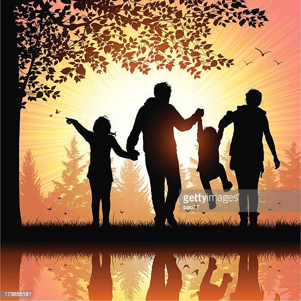
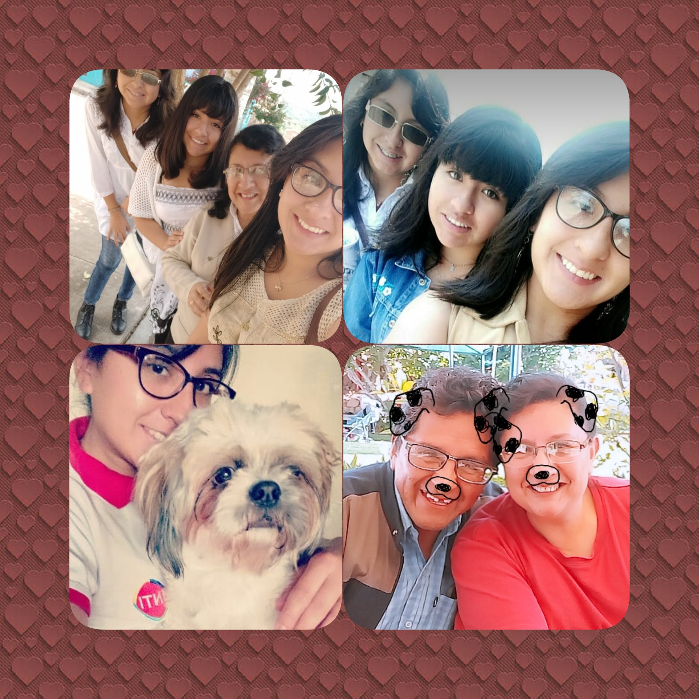

Mi Familia

La familia es la brújula que guía nuestro camino,
la inspiración para caminar hasta lo alto de la montaña
y el mayor consuelo cuando algo sale mal.
Mi familia está conformada por cinco personas, donde yo resulto ser la hermana del medio.
Mia padres son Miguel y Liliana, ninguno tiene una carrera como tal, mi mamá estaba estudiando
medicina pero abandonó la carrera en ultimo año, mi papá solo llegó a rerminar colegio.
Mis hermanas son personas que les encanta el área salud, la mayor, Eliana, es médico y se casó
hace más de un año, ahora tiene su primera hijita, mi primera sobrina, Luciana. Juanita es la menor,
ella está en segundo año de medicina y le encantan los animales, en especial los gatos, le encanta leer
y es muy creativa.
